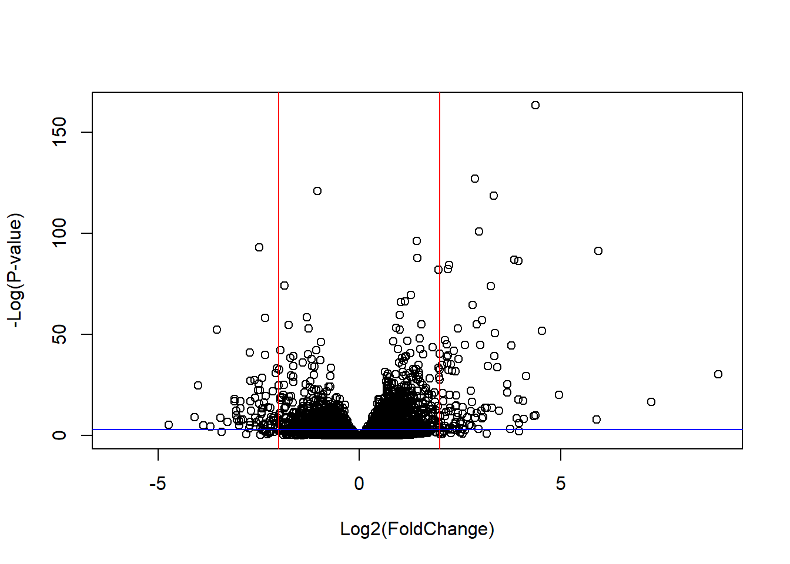
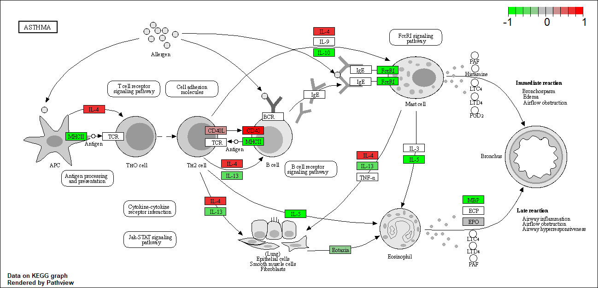

# Complete the missing code
counts <- read.csv("airway_scaledcounts.csv", row.names=1)
metadata <- read.csv("airway_metadata.csv")Class 13: RNASeq analysis with DESeq2
The data for this hands-on session comes from a published RNA-seq experiment where airway smooth muscle cells were treated with dexamethasone (dex), a synthetic glucocorticoid steroid with anti-inflammatory effects (Himes et al. 2014).
3. Import countData and colData
head(counts) SRR1039508 SRR1039509 SRR1039512 SRR1039513 SRR1039516
ENSG00000000003 723 486 904 445 1170
ENSG00000000005 0 0 0 0 0
ENSG00000000419 467 523 616 371 582
ENSG00000000457 347 258 364 237 318
ENSG00000000460 96 81 73 66 118
ENSG00000000938 0 0 1 0 2
SRR1039517 SRR1039520 SRR1039521
ENSG00000000003 1097 806 604
ENSG00000000005 0 0 0
ENSG00000000419 781 417 509
ENSG00000000457 447 330 324
ENSG00000000460 94 102 74
ENSG00000000938 0 0 0head(metadata) id dex celltype geo_id
1 SRR1039508 control N61311 GSM1275862
2 SRR1039509 treated N61311 GSM1275863
3 SRR1039512 control N052611 GSM1275866
4 SRR1039513 treated N052611 GSM1275867
5 SRR1039516 control N080611 GSM1275870
6 SRR1039517 treated N080611 GSM1275871Q1. How many genes are in this dataset?
nrow(counts)[1] 38694Q2. How many ‘control’ cell lines do we have?
sum(metadata$dex == "control")[1] 44. Toy differential gene expression
Let’s start by calculating the mean counts per gene in the “control” samples. We can then compare this value for each gene to the mean counts in the “treated” samples (i.e. columns).
- Step 1. Find wich columns in
countscorrespond to “control” samples. - Step 2. Calculate the mean value per gene in these columns.
- Step 3. Store my answer for later in
control.mean
control.inds <- metadata[,"dex"] == "control"
control.counts <- counts[ ,control.inds]
control.mean <- rowSums( control.counts )/4
head(control.mean)ENSG00000000003 ENSG00000000005 ENSG00000000419 ENSG00000000457 ENSG00000000460
900.75 0.00 520.50 339.75 97.25
ENSG00000000938
0.75 Q3. How would you make the above code in either approach more robust? Is there a function that could help here?
I would not hardcode the number of control cell lines and use the rowMeans() function instead`.
control.inds <- metadata[,"dex"] == "control"
control.counts <- counts[ ,control.inds]
control.mean <- rowMeans(control.counts)
head(control.mean)ENSG00000000003 ENSG00000000005 ENSG00000000419 ENSG00000000457 ENSG00000000460
900.75 0.00 520.50 339.75 97.25
ENSG00000000938
0.75 Q4. Follow the same procedure for the treated samples (i.e. calculate the mean per gene across drug treated samples and assign to a labeled vector called treated.mean)
treated.inds <- metadata[,"dex"] == "treated"
treated.counts <- counts[ ,treated.inds]
treated.mean <- rowMeans(treated.counts)
head(treated.mean)ENSG00000000003 ENSG00000000005 ENSG00000000419 ENSG00000000457 ENSG00000000460
658.00 0.00 546.00 316.50 78.75
ENSG00000000938
0.00 TO keep us tidy let’s put control.mean and treated.mean vector together as two columns of a new data.frame.
meancounts <- data.frame(control.mean, treated.mean)head(meancounts) control.mean treated.mean
ENSG00000000003 900.75 658.00
ENSG00000000005 0.00 0.00
ENSG00000000419 520.50 546.00
ENSG00000000457 339.75 316.50
ENSG00000000460 97.25 78.75
ENSG00000000938 0.75 0.00Q5 (a). Create a scatter plot showing the mean of the treated samples against the mean of the control samples.
plot(meancounts)
Q5 (b).You could also use the ggplot2 package to make this figure producing the plot below. What geom_?() function would you use for this plot?
library(ggplot2)
ggplot(meancounts, aes(control.mean, treated.mean)) +
geom_point(alpha = 0.2)
Q6. Try plotting both axes on a log scale. What is the argument to plot() that allows you to do this?
plot(meancounts, log = "xy")Warning in xy.coords(x, y, xlabel, ylabel, log): 15032 x values <= 0 omitted
from logarithmic plotWarning in xy.coords(x, y, xlabel, ylabel, log): 15281 y values <= 0 omitted
from logarithmic plot
Log transformation are super useful when our data is skewed and measured over a wide range like this. We can use different log transformations like base10 or natural logs but we most often prefer log2 units.
# Treated/Control
log2(10/10)[1] 0What if there was a doubling
# Treated/Control
log2(20/10)[1] 1Half counts
log2(10/20)[1] -1Quadruple
log2(40/10)[1] 2Let’s add a log2 fold-change column to our little meancounts data.frame:
meancounts$log2fc <- log2(meancounts[,"treated.mean"]/
meancounts[,"control.mean"])
head(meancounts) control.mean treated.mean log2fc
ENSG00000000003 900.75 658.00 -0.45303916
ENSG00000000005 0.00 0.00 NaN
ENSG00000000419 520.50 546.00 0.06900279
ENSG00000000457 339.75 316.50 -0.10226805
ENSG00000000460 97.25 78.75 -0.30441833
ENSG00000000938 0.75 0.00 -InfThere are a couple of “weird” results. Namely, the NaN (“not a number”) and -Inf (negative infinity) results.
The NaN is returned when you divide by zero and try to take the log. The -Inf is returned when you try to take the log of zero. It turns out that there are a lot of genes with zero expression. Let’s filter our data to remove these genes.
to.rm.inds <- rowSums(meancounts[,1:2]==0) > 0
mycounts <- meancounts[!to.rm.inds, ]
head(mycounts) control.mean treated.mean log2fc
ENSG00000000003 900.75 658.00 -0.45303916
ENSG00000000419 520.50 546.00 0.06900279
ENSG00000000457 339.75 316.50 -0.10226805
ENSG00000000460 97.25 78.75 -0.30441833
ENSG00000000971 5219.00 6687.50 0.35769358
ENSG00000001036 2327.00 1785.75 -0.38194109zero.vals <- which(meancounts[,1:2]==0, arr.ind=TRUE)
to.rm <- unique(zero.vals[,1])
mycounts <- meancounts[-to.rm,]
head(mycounts) control.mean treated.mean log2fc
ENSG00000000003 900.75 658.00 -0.45303916
ENSG00000000419 520.50 546.00 0.06900279
ENSG00000000457 339.75 316.50 -0.10226805
ENSG00000000460 97.25 78.75 -0.30441833
ENSG00000000971 5219.00 6687.50 0.35769358
ENSG00000001036 2327.00 1785.75 -0.38194109Q7. What is the purpose of the arr.ind argument in the which() function call above? Why would we then take the first column of the output and need to call the unique() function?
The purpose of arr.ind is to force the which() function to include the indices (of row and columns) of meancounts in zero.vals
We’re calling unique() and check the first column to check for duplicates ids and avoid counting the rwos twice
A common threshold used for calling something differentially expressed is a log2(FoldChange) of greater than 2 or less than -2. Let’s filter the dataset both ways to see how many genes are up or down-regulated.
up.ind <- mycounts$log2fc > 2
down.ind <- mycounts$log2fc < (-2)Q8. Using the up.ind vector above can you determine how many up regulated genes we have at the greater than 2 fc level?
sum(up.ind)[1] 250Q9. Using the down.ind vector above can you determine how many down regulated genes we have at the greater than 2 fc level?
sum(down.ind)[1] 367Q10. Do you trust these results? Why or why not?
No, because we didn’t account for statistical significance of these differences…
We will use the DESeq2 package to do this analysis properly
Using DESeq2
Like any package we must load it up with a library() call.
library(DESeq2)Loading required package: S4VectorsLoading required package: stats4Loading required package: BiocGenerics
Attaching package: 'BiocGenerics'The following objects are masked from 'package:stats':
IQR, mad, sd, var, xtabsThe following objects are masked from 'package:base':
anyDuplicated, aperm, append, as.data.frame, basename, cbind,
colnames, dirname, do.call, duplicated, eval, evalq, Filter, Find,
get, grep, grepl, intersect, is.unsorted, lapply, Map, mapply,
match, mget, order, paste, pmax, pmax.int, pmin, pmin.int,
Position, rank, rbind, Reduce, rownames, sapply, setdiff, sort,
table, tapply, union, unique, unsplit, which.max, which.min
Attaching package: 'S4Vectors'The following object is masked from 'package:utils':
findMatchesThe following objects are masked from 'package:base':
expand.grid, I, unnameLoading required package: IRanges
Attaching package: 'IRanges'The following object is masked from 'package:grDevices':
windowsLoading required package: GenomicRangesLoading required package: GenomeInfoDbWarning: package 'GenomeInfoDb' was built under R version 4.3.2Loading required package: SummarizedExperimentLoading required package: MatrixGenericsLoading required package: matrixStatsWarning: package 'matrixStats' was built under R version 4.3.2
Attaching package: 'MatrixGenerics'The following objects are masked from 'package:matrixStats':
colAlls, colAnyNAs, colAnys, colAvgsPerRowSet, colCollapse,
colCounts, colCummaxs, colCummins, colCumprods, colCumsums,
colDiffs, colIQRDiffs, colIQRs, colLogSumExps, colMadDiffs,
colMads, colMaxs, colMeans2, colMedians, colMins, colOrderStats,
colProds, colQuantiles, colRanges, colRanks, colSdDiffs, colSds,
colSums2, colTabulates, colVarDiffs, colVars, colWeightedMads,
colWeightedMeans, colWeightedMedians, colWeightedSds,
colWeightedVars, rowAlls, rowAnyNAs, rowAnys, rowAvgsPerColSet,
rowCollapse, rowCounts, rowCummaxs, rowCummins, rowCumprods,
rowCumsums, rowDiffs, rowIQRDiffs, rowIQRs, rowLogSumExps,
rowMadDiffs, rowMads, rowMaxs, rowMeans2, rowMedians, rowMins,
rowOrderStats, rowProds, rowQuantiles, rowRanges, rowRanks,
rowSdDiffs, rowSds, rowSums2, rowTabulates, rowVarDiffs, rowVars,
rowWeightedMads, rowWeightedMeans, rowWeightedMedians,
rowWeightedSds, rowWeightedVarsLoading required package: BiobaseWelcome to Bioconductor
Vignettes contain introductory material; view with
'browseVignettes()'. To cite Bioconductor, see
'citation("Biobase")', and for packages 'citation("pkgname")'.
Attaching package: 'Biobase'The following object is masked from 'package:MatrixGenerics':
rowMediansThe following objects are masked from 'package:matrixStats':
anyMissing, rowMediansSet the input object
dds <- DESeqDataSetFromMatrix(countData = counts,
colData = metadata,
design = ~dex)converting counts to integer modeWarning in DESeqDataSet(se, design = design, ignoreRank): some variables in
design formula are characters, converting to factorsNow we can run our DESeq analysis
dds <- DESeq(dds)estimating size factorsestimating dispersionsgene-wise dispersion estimatesmean-dispersion relationshipfinal dispersion estimatesfitting model and testingGet our results back from the dds object
res <- results(dds)
head(res)log2 fold change (MLE): dex treated vs control
Wald test p-value: dex treated vs control
DataFrame with 6 rows and 6 columns
baseMean log2FoldChange lfcSE stat pvalue
<numeric> <numeric> <numeric> <numeric> <numeric>
ENSG00000000003 747.194195 -0.3507030 0.168246 -2.084470 0.0371175
ENSG00000000005 0.000000 NA NA NA NA
ENSG00000000419 520.134160 0.2061078 0.101059 2.039475 0.0414026
ENSG00000000457 322.664844 0.0245269 0.145145 0.168982 0.8658106
ENSG00000000460 87.682625 -0.1471420 0.257007 -0.572521 0.5669691
ENSG00000000938 0.319167 -1.7322890 3.493601 -0.495846 0.6200029
padj
<numeric>
ENSG00000000003 0.163035
ENSG00000000005 NA
ENSG00000000419 0.176032
ENSG00000000457 0.961694
ENSG00000000460 0.815849
ENSG00000000938 NAA summary results plot
Volcano plot. This is a common type of summary figure that keeps both our inner biologist and inner stats nerd happy because it shows both P values and Log2(Fold-Changes).
plot(res$log2FoldChange, -log(res$padj),
xlab="Log2(FoldChange)",
ylab="-Log(P-value)")
plot(res$log2FoldChange, -log(res$padj),
xlab="Log2(FoldChange)",
ylab="-Log(P-value)")
abline(v=2, col = "red")
abline(v=-2, col = "red")
abline(h=-log(0.05), col = "blue")
To color the points we will setup a custom color vector indicating transcripts with large fold change and significant differences between conditions:
# Setup our custom point color vector
mycols <- rep("gray", nrow(res))
mycols[ abs(res$log2FoldChange) > 2 ] <- "red"
inds <- (res$padj < 0.01) & (abs(res$log2FoldChange) > 2 )
mycols[ inds ] <- "blue"
# Volcano plot with custom colors
plot( res$log2FoldChange, -log(res$padj),
col=mycols, ylab="-Log(P-value)", xlab="Log2(FoldChange)" )
# Cut-off lines
abline(v=c(-2,2), col="gray", lty=2)
abline(h=-log(0.1), col="gray", lty=2)
Save our results to date…
write.csv(res, file="deseq_results.csv")Adding annotation data
Our result table so far only contains the Ensembl gene IDs. However, alternative gene names and extra annotation are usually required for informative interpretation of our results. In this section we will add this necessary annotation data to our results.
library("AnnotationDbi")Warning: package 'AnnotationDbi' was built under R version 4.3.2library("org.Hs.eg.db")columns(org.Hs.eg.db) [1] "ACCNUM" "ALIAS" "ENSEMBL" "ENSEMBLPROT" "ENSEMBLTRANS"
[6] "ENTREZID" "ENZYME" "EVIDENCE" "EVIDENCEALL" "GENENAME"
[11] "GENETYPE" "GO" "GOALL" "IPI" "MAP"
[16] "OMIM" "ONTOLOGY" "ONTOLOGYALL" "PATH" "PFAM"
[21] "PMID" "PROSITE" "REFSEQ" "SYMBOL" "UCSCKG"
[26] "UNIPROT" The main function we will use here is called mapIds()
Our current IDs are here:
#mapIds()
head(row.names(res))[1] "ENSG00000000003" "ENSG00000000005" "ENSG00000000419" "ENSG00000000457"
[5] "ENSG00000000460" "ENSG00000000938"These are in ENSEMBLE format. I want “SYMBOL” ids:
res$symbol <- mapIds(org.Hs.eg.db,
keys=row.names(res), # Our genenames
keytype="ENSEMBL", # The format of our genenames
column="SYMBOL", # The new format we want to add
multiVals="first")'select()' returned 1:many mapping between keys and columnshead(res)log2 fold change (MLE): dex treated vs control
Wald test p-value: dex treated vs control
DataFrame with 6 rows and 7 columns
baseMean log2FoldChange lfcSE stat pvalue
<numeric> <numeric> <numeric> <numeric> <numeric>
ENSG00000000003 747.194195 -0.3507030 0.168246 -2.084470 0.0371175
ENSG00000000005 0.000000 NA NA NA NA
ENSG00000000419 520.134160 0.2061078 0.101059 2.039475 0.0414026
ENSG00000000457 322.664844 0.0245269 0.145145 0.168982 0.8658106
ENSG00000000460 87.682625 -0.1471420 0.257007 -0.572521 0.5669691
ENSG00000000938 0.319167 -1.7322890 3.493601 -0.495846 0.6200029
padj symbol
<numeric> <character>
ENSG00000000003 0.163035 TSPAN6
ENSG00000000005 NA TNMD
ENSG00000000419 0.176032 DPM1
ENSG00000000457 0.961694 SCYL3
ENSG00000000460 0.815849 FIRRM
ENSG00000000938 NA FGRQ11. Run the mapIds() function two more times to add the Entrez ID and UniProt accession and GENENAME as new columns called res\(entrez, res\)uniprot and res$genename.
Let’s add GENENAME
res$genename <- mapIds(org.Hs.eg.db,
keys=row.names(res), # Our genenames
keytype="ENSEMBL", # The format of our genenames
column="GENENAME", # The new format we want to add
multiVals="first")'select()' returned 1:many mapping between keys and columnshead(res)log2 fold change (MLE): dex treated vs control
Wald test p-value: dex treated vs control
DataFrame with 6 rows and 8 columns
baseMean log2FoldChange lfcSE stat pvalue
<numeric> <numeric> <numeric> <numeric> <numeric>
ENSG00000000003 747.194195 -0.3507030 0.168246 -2.084470 0.0371175
ENSG00000000005 0.000000 NA NA NA NA
ENSG00000000419 520.134160 0.2061078 0.101059 2.039475 0.0414026
ENSG00000000457 322.664844 0.0245269 0.145145 0.168982 0.8658106
ENSG00000000460 87.682625 -0.1471420 0.257007 -0.572521 0.5669691
ENSG00000000938 0.319167 -1.7322890 3.493601 -0.495846 0.6200029
padj symbol genename
<numeric> <character> <character>
ENSG00000000003 0.163035 TSPAN6 tetraspanin 6
ENSG00000000005 NA TNMD tenomodulin
ENSG00000000419 0.176032 DPM1 dolichyl-phosphate m..
ENSG00000000457 0.961694 SCYL3 SCY1 like pseudokina..
ENSG00000000460 0.815849 FIRRM FIGNL1 interacting r..
ENSG00000000938 NA FGR FGR proto-oncogene, ..res$entrez <- mapIds(org.Hs.eg.db,
keys=row.names(res), # Our genenames
keytype="ENSEMBL", # The format of our genenames
column="ENTREZID", # The new format we want to add
multiVals="first")'select()' returned 1:many mapping between keys and columnshead(res)log2 fold change (MLE): dex treated vs control
Wald test p-value: dex treated vs control
DataFrame with 6 rows and 9 columns
baseMean log2FoldChange lfcSE stat pvalue
<numeric> <numeric> <numeric> <numeric> <numeric>
ENSG00000000003 747.194195 -0.3507030 0.168246 -2.084470 0.0371175
ENSG00000000005 0.000000 NA NA NA NA
ENSG00000000419 520.134160 0.2061078 0.101059 2.039475 0.0414026
ENSG00000000457 322.664844 0.0245269 0.145145 0.168982 0.8658106
ENSG00000000460 87.682625 -0.1471420 0.257007 -0.572521 0.5669691
ENSG00000000938 0.319167 -1.7322890 3.493601 -0.495846 0.6200029
padj symbol genename entrez
<numeric> <character> <character> <character>
ENSG00000000003 0.163035 TSPAN6 tetraspanin 6 7105
ENSG00000000005 NA TNMD tenomodulin 64102
ENSG00000000419 0.176032 DPM1 dolichyl-phosphate m.. 8813
ENSG00000000457 0.961694 SCYL3 SCY1 like pseudokina.. 57147
ENSG00000000460 0.815849 FIRRM FIGNL1 interacting r.. 55732
ENSG00000000938 NA FGR FGR proto-oncogene, .. 2268PAthway analysis
We weill use the gage package along with pathview here to do geneset enrichment (a.k.a. pathway analysis) and figure generation respectively.
library(pathview)##############################################################################
Pathview is an open source software package distributed under GNU General
Public License version 3 (GPLv3). Details of GPLv3 is available at
http://www.gnu.org/licenses/gpl-3.0.html. Particullary, users are required to
formally cite the original Pathview paper (not just mention it) in publications
or products. For details, do citation("pathview") within R.
The pathview downloads and uses KEGG data. Non-academic uses may require a KEGG
license agreement (details at http://www.kegg.jp/kegg/legal.html).
##############################################################################library(gage)library(gageData)Let’s have a peak at the first two pathways in KEGG
data(kegg.sets.hs)
# Examine the first 2 pathways in this kegg set for humans
head(kegg.sets.hs, 2)$`hsa00232 Caffeine metabolism`
[1] "10" "1544" "1548" "1549" "1553" "7498" "9"
$`hsa00983 Drug metabolism - other enzymes`
[1] "10" "1066" "10720" "10941" "151531" "1548" "1549" "1551"
[9] "1553" "1576" "1577" "1806" "1807" "1890" "221223" "2990"
[17] "3251" "3614" "3615" "3704" "51733" "54490" "54575" "54576"
[25] "54577" "54578" "54579" "54600" "54657" "54658" "54659" "54963"
[33] "574537" "64816" "7083" "7084" "7172" "7363" "7364" "7365"
[41] "7366" "7367" "7371" "7372" "7378" "7498" "79799" "83549"
[49] "8824" "8833" "9" "978" What we need for gage() is our genes in ENTREZ id format with a measure of their importance.
It wants a vector of e.g. fold-changes.
foldchanges <- res$log2FoldChange
head(foldchanges)[1] -0.35070302 NA 0.20610777 0.02452695 -0.14714205 -1.73228897x <- c(100,80,100)
names(x) <- c("desteny", "barry", "chris")
xdesteny barry chris
100 80 100 Add ENTREZ ids as names() to my foldchanges vector.
names(foldchanges) <- res$entrez
head(foldchanges) 7105 64102 8813 57147 55732 2268
-0.35070302 NA 0.20610777 0.02452695 -0.14714205 -1.73228897 Now we can run gage() with this input vector and the genset we want to examine for overlap/enrichment.
# Get the results
keggres <- gage(foldchanges, gsets=kegg.sets.hs)Look at the results
attributes(keggres)$names
[1] "greater" "less" "stats" head(keggres$less, 3) p.geomean stat.mean p.val
hsa05332 Graft-versus-host disease 0.0004250461 -3.473346 0.0004250461
hsa04940 Type I diabetes mellitus 0.0017820293 -3.002352 0.0017820293
hsa05310 Asthma 0.0020045888 -3.009050 0.0020045888
q.val set.size exp1
hsa05332 Graft-versus-host disease 0.09053483 40 0.0004250461
hsa04940 Type I diabetes mellitus 0.14232581 42 0.0017820293
hsa05310 Asthma 0.14232581 29 0.0020045888We can view these pathways with our geneset genes highlighted using the pathview() function. E.g. for Asthma I will use the pathway.id hsa05310 as seen above
pathview(gene.data=foldchanges, pathway.id = "hsa05310")'select()' returned 1:1 mapping between keys and columnsInfo: Working in directory C:/Users/nicol/OneDrive/Documents/BioTech/3 Anno/Primo Semestre/BIMM143/Lab13Info: Writing image file hsa05310.pathview.png